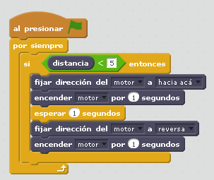

Cocodrilo hambriento
Objetivo
Es sin duda la construcción que identifica este set de Lego. Se trata de un cocodrilo que tiene que abrir o cerrar la boca interactuando con el objeto que se encuentre en la boca. Aquí se trabaja:
- La entrada de un sensor
- La interacción que produce de forma real cerrando la boca
- Otras interacciones podrían ser de forma virtual: Personaje cocodrilo abriendo y cerrando la boca con sonido incorporado
Construcción
En este enlace tenemos el pdf o en este otro en Dropbox
Propuesta
De momento el enunciado que proponemos será que cierre la boca si se introduce un objeto y al cabo de 1 segundo que la abra para poder liberar el objeto:
Solución

Otra propuesta
Que no pare de masticar mientres esté el objeto
Otra propuesta
Que el caiman cierre y abra la boca varias veces cuando detecte un objeto
Solución